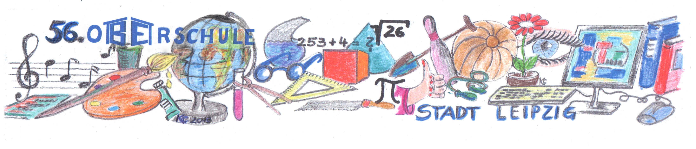

über uns
Projekte
Freizeit
Oberschule
Die neue Oberschule = Mittelschule plus
Mit der neuen Oberschule wurde keine neue Schulart eingeführt. Die bisherige Mittelschule wurde so weiterentwickelt, dass noch mehr individuelle Förderung, Leistungsdifferenzierung sowie optimierte Berufsorientierung möglich werden.
Die Oberschule gewährleistet weiterhin die Bildungsgänge zur Realschule und zur Hauptschule unter einem Dach. Jeder Einzelne soll seinen Stärken und Schwächen entsprechend Förderung erhalten.
Diese besondere Förderung der Schüler erfolgt durch Bildung von Leistungsgruppen, durch Einführung einer 2. Fremdsprache (neben Englisch) sowie durch vielfältige Orientierung auf Berufs- und Studienwahl.
Für unsere Schule heißt das:
2. Fremdsprache
| Wer | Was | Wie oft |
|---|---|---|
| Klasse 6.7.8.9.10 | Russisch Abschluss mit einem fachpraktischem Leistungsnachweis | 3 Std. je Woche |
| Klasse 6.7.8.9 | Französisch Abschluss mit einem fachpraktischem Leistungsnachweis | 3 Std. je Woche |
Mit Beginn der 5. Klasse können Schülerinnen und Schüler unsere Oberschule besuchen. Die Klassenstufe 5 und die Klassenstufe 6 werden als Orientierungsstufe bezeichnet. Der Lehrplan entspricht in diesen zwei Jahren dem des Gymnasiums.
Die Eltern haben die Möglichkeit, bei entsprechenden Leistungen ihres Kindes, einen Antrag auf Wechsel zum Gymnasium zum Ende des Schuljahres zu stellen.
Im März eines jeden Schuljahres erhalten die Schüler der Klassenstufe 6 die Entscheidung über den weiteren Bildungsweg – Real- oder Hauptschulbildungsgang – für die weitere Schullaufbahn. Außerdem können die Kinder gemeinsam mit ihren Eltern für Klasse 7 zum ersten Mal einen Neigungskurs aus den Angeboten der Schule auswählen.
Die Berufsorientierung nimmt ab der Klassenstufe 7 ebenfalls einen großen Stellenwert ein. Die Schüler erhalten einen Berufswahlpass, in dem sie alle wichtigen Dokumente für die Berufsorientierung sammeln können. Dazu gehören Nachweise und Zertifikate für eine zukünftige Bewerbung, der Lebenslauf, Praktikumsberichte und deren Beurteilungen sowie vieles mehr.
Unser Ziel ist es, dass alle Schülerinnen und Schüler nach der 9. Klasse mit einem Hauptschulabschluss bzw. einem qualifizierenden Hauptschulabschluss oder nach der 10. Klasse mit einem Realschulabschluss die Schullaufbahn bei uns erfolgreich beenden.
Text: Steffi Thurm und Karin Casper
Das sächsische Schulsystem
| Klasse 10 Realschule | |
| Klasse 9 Realschule | Klasse 9 Hauptschule |
| Klasse 8 Realschule | Klasse 8 Hauptschule |
| Klasse 7 Realschule | Klasse 7 Hauptschule |
| Orientierungsstufe Klasse 5 und 6 | |
| Grundschule Klasse 1 bis 4 | |